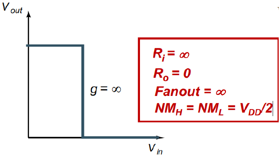

复习材料·Homework第 1 章往年 Homework 原题
题目来源
考试相关/DIC Review/Chap1 Intro/hw1_answer_update.pdf · PDF页 2 · 原题号 选择题1 / 问题1
原题按原编号列出；实验题明确整理为读图或笔试问法。重复知识点保留各来源版本，避免漏掉不同参数与条件。
先读：本题所需概念
反相器把低输入变成高输出、高输入变成低输出。输入为横轴、输出为纵轴的静态关系叫电压传输曲线，简称 。 是电源电压； 是输出能保证的最低高电平、最高低电平； 是后级能识别为高、低的输入边界。可容许的电压扰动余量叫噪声容限：。局部变化率 叫增益；稳定平台的 可压缩小扰动，称为再生。输入等于输出的位置叫开关阈值 。
知识出处：PPT/chapter1-introduction 20260914.pdf，PDF 第 34–40 页。
回看完整解释：2.3 电压有误差时，0和1还能不能认出来 · 2.2 输入不变以后，输出会停在哪里。题目中的专用参数以题干定义为准；可点带底纹的术语回查首次解释。
题目
理想反相器意味着什么？（多选）
查看答案与解析
答案与解析
答案：、、。
输入电阻衡量前级受到的直流负载，输出电阻衡量本级输出电压受到负载影响的程度；增益是输出电压相对输入电压的变化率。理想电压逻辑门希望输入几乎不吸收电流、输出能保持电平、翻转区陡峭，因此：
噪声容限表示逻辑电平能够容许的噪声幅度。开关阈值位于电源中点的理想对称反相器满足：
选项中的“过大”措辞有歧义：噪声容限大通常是优点。源答案未选，应保留这一题面问题，不能解释成“大噪声容限是不理想的”。
